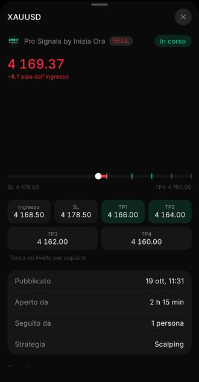
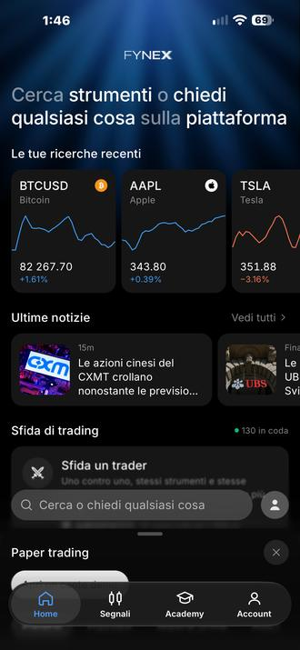

Nella Sala Pro vengono pubblicate le idee operative con ingresso, stop loss e obiettivo. Ci si arriva dalla community Telegram.
Entra e richiedi la Sala Pro →Senza abbonamento · si chiede nella community
Senza abbonamento: serve un conto con il broker e i costi di trading restano a tuo carico. Riceviamo una commissione dal broker.
Risultati passati: non garantiscono risultati futuri. Non è consulenza. Sono i segnali della sala, non i risultati di un conto: i pips sono contati dal primo prezzo d'ingresso, stop loss compresi; "a target" vuol dire che è stato raggiunto almeno il primo obiettivo (TP1). "Né target né stop": segnali che nei dati di Inizia Ora non risultano né a target né a stop. I giorni con «—» non sono nei dati. Dati di Inizia Ora.
Per entrare nella Sala Pro serve un conto con almeno 500 $. L'accesso è gratuito: i soldi restano sul tuo conto, al broker.
Si apre in 4 passi. Tocca un passo per i dettagli.
Apri il link di registrazione che ti mandiamo: usa proprio quello, così resti collegato a noi e all'assistenza.
Inserisci nome, cognome ed un'email che controlli: ti arrivano le credenziali del portale. Poi entra nel portale e completa il profilo: data di nascita, indirizzo, telefono.
Non arriva l'email? Guarda nello spam, poi scrivi all'assistenza.
Carica nel portale un documento d'identità valido e una prova di residenza recente (bolletta o estratto conto). La verifica dura di solito 24–48 ore lavorative.
Se viene respinta, leggi l'email del broker e scrivi all'assistenza prima di rifare l'invio.
Bonifico, consigliato per il primo: dal portale, Depositi → Bonifico. Arriva in 1–2 giorni lavorativi. Nella causale scrivi il numero del tuo conto.
Carta: accredito immediato, ma i depositi successivi con la stessa carta devono essere dello stesso importo. Per importi diversi usa il bonifico.
Per la Sala Pro: almeno 500 $.
Scarica MetaTrader 5 da App Store o Google Play, poi «Accedi a un conto esistente» con server, numero conto e password che ti ha mandato il broker.
Attiva le notifiche di Telegram: le idee operative arrivano in tempo reale.
Nome, cognome e un'email valida. Per la verifica poi servono documento d'identità e prova di residenza.
Poche ore per le credenziali, 24–48 ore lavorative per la verifica, poi il primo deposito.
Documento d'identità valido e una prova di residenza recente (bolletta o estratto conto).
Leggi l'email del broker: di solito manca un dato o il documento non si legge. Scrivi all'assistenza prima di rifare l'invio.
Per la Sala Pro serve un conto con almeno 500 $.
Dal portale del broker, sezione Prelievi. I tempi dipendono dal metodo di pagamento.
Spesso è la regola della carta (stesso importo del deposito) o una verifica non completa. Scrivi all'assistenza con il numero del conto.
Usa «password dimenticata» nella pagina di accesso del broker. Se non arriva l'email, scrivi all'assistenza.
Sì, si chiede un conto aggiuntivo collegato al tuo profilo, senza rifare la verifica.
No. L'accesso è gratuito: si attiva con il conto al broker partner e i soldi restano sul tuo conto.
Con l'app Fynex vedi e consulti tutto da un posto solo: tocchi un livello per copiarne il valore, ritrovi l'archivio, cerchi gli strumenti e leggi le ultime notizie. Dentro c'è anche l'Academy.


Le idee operative sono condivise a scopo informativo e non sono consulenza personalizzata. I risultati passati non garantiscono risultati futuri. I CFD sono strumenti complessi e comportano un alto rischio di perdere denaro rapidamente a causa della leva finanziaria.